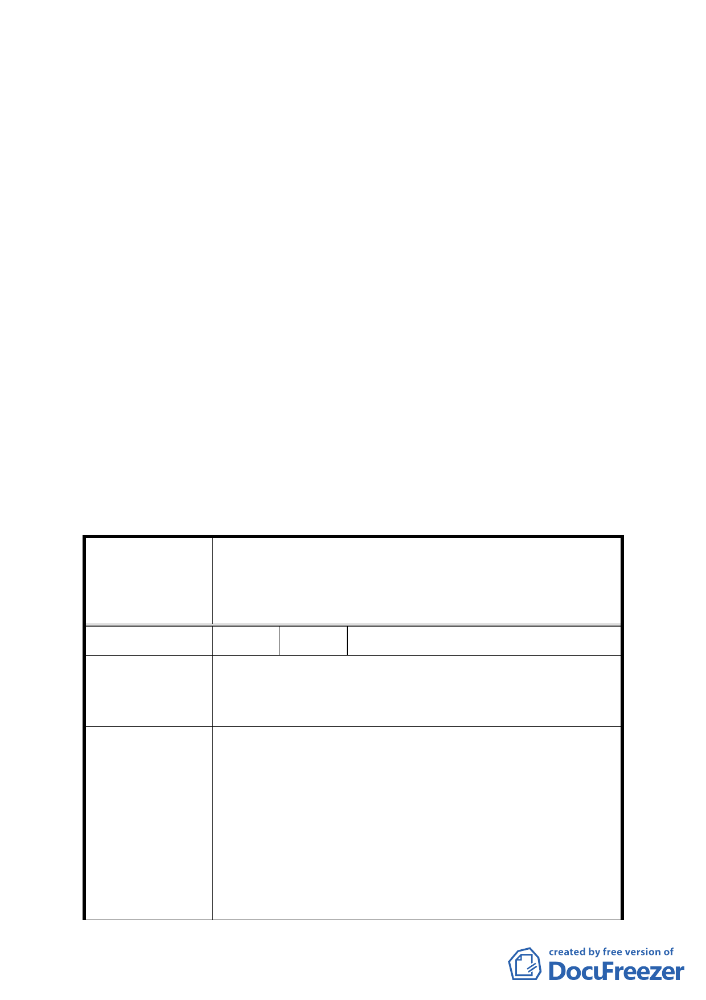

行『臺北市土地使用分區管制規則』規定辦理」。
4. 所送修正後計畫書第 11 頁柒、都市設計準則，請比照
已公告實施之「2010 年臺北好好看」都市計畫變更案
件，增列「建築基地應依建築技術規則綠建築專章規定
檢討」。
5. 所送修正後計畫書第 12 頁玖、事業及財務計畫「二、…
都市計畫公告實施後 5 年內開發完成」，文字修正為
「二、…都市計畫公告實施後 4 年內開發完成」
6. 修正後計畫書第 13 頁「拾、其他第三點、本計畫未規
定事項悉依相關法令及原計畫規定辦理」，請修正為
「三、本計畫未規定事項悉依相關法令及 92.1.7 修訂
『臺北市基隆河（中山橋至成美橋段）附近地區細部計
畫暨配合修訂主要計畫案內『基隆河（中山橋至成美橋）
附近地區土地使用分區與都市設計管制要點』』案規定
辦理」。
二、 公民或團體陳情意見審決如後附綜理表。
臺北市都市計畫委員會公民或團體所提意見綜理表
案
編
修訂臺北市基隆河（中山橋至成美橋段）附近地區細部
名 計畫商業區（供商業購物中心使用）街廓編號 A2 基地
（中山區金泰段 105 地號）土地使用分區管制規定與都
市設計管制要點計畫案
號 1 陳情人 陳議員玉梅
目前大彎北段商業區之建物使用現況，大多違規作為住
陳 情 理 由 宅使用。大彎北段之商業區、娛樂區已有部分土地依現
行之法令完成開發建築。
為避免都市計畫變更公告實施後，造成未來有更大量之
違規使用情事發生，故建議地上 1 至 3 層樓維持商業使
用，地上 4 層樓以上開放作為住宅使用，住宅使用比例
≦2/3 總容積，高度限制以不阻擋河岸景觀，及免辦環
建 議 辦 法 境影響評估審查之 70 公尺為原則。為避免不切現況發
展，建議取消「街廓 A1、A2、B1、B2 街廓內臨接退縮
5 公尺人行道，其兩側每單一土地細分規模之建築基地
及 C2 街廓內需留設至少一處南北向生態及及山稜視景
廊道，其兩側建築物高度比依前開規定辦理，自指定退
- 18 -